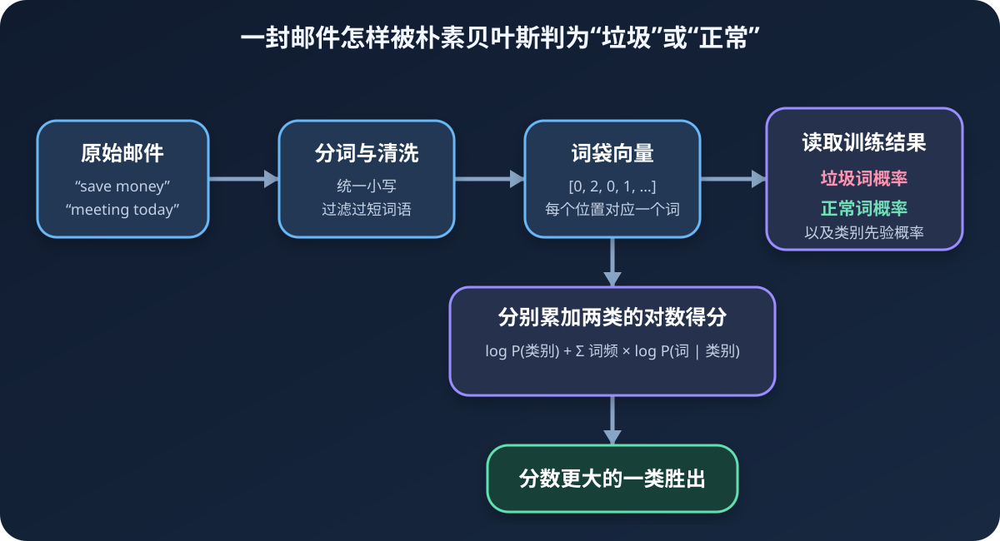

看到“免费、折扣、立即购买”，你会更怀疑一封邮件是垃圾邮件；看到“会议、项目、明天见”，你又会更倾向于把它当作正常邮件。朴素贝叶斯做的事情，就是从已有邮件里统计这些词分别在哪一类中更常见，再综合整封邮件给出的证据。
读完你会做到
- 理解先验概率、条件概率和贝叶斯公式的直觉
- 把自然语言转换成词集或词袋向量
- 看懂拉普拉斯平滑和对数概率为什么必不可少
- 从读取 50 封邮件开始，完成训练、测试和错误率计算
一、先看最终任务：过滤垃圾邮件
这是一个典型的二分类问题：输入是一封邮件，输出只有两个类别。
1：垃圾邮件（spam）。0：正常邮件（ham）。
机器不能直接理解一段英文，所以完整流程要经过五步：

- 读取邮件并切成单词。
- 建立一个包含所有不同单词的词表。
- 按照词表把每封邮件转换成数字向量。
- 从训练邮件中统计每一类的词语概率。
- 计算新邮件更像垃圾邮件还是正常邮件。
二、贝叶斯公式到底在问什么
我们真正想知道的是：
已经看到邮件里的这些词，它属于垃圾邮件的概率有多大？
这叫后验概率，写作 P(垃圾 | 这些词)。竖线可以读成“在已经知道……的条件下”。贝叶斯公式把这个难直接统计的问题，转换成更容易从训练数据中计算的形式：
P(垃圾 | 词语) = P(词语 | 垃圾) × P(垃圾) ÷ P(词语)
每一部分的意思是：
P(垃圾)：还没看内容之前，一封邮件本来有多大概率是垃圾邮件，叫先验概率。P(词语 | 垃圾)：已知它是垃圾邮件，出现这些词的可能性。P(词语)：不区分类别时，看到这些词的可能性。P(垃圾 | 词语)：看完这些词之后，对“它是垃圾邮件”的更新判断。
分类时，我们还会计算 P(正常 | 词语)。两边的分母 P(词语) 完全相同，只比较大小时可以同时删掉，因此代码实际比较：
垃圾得分 ∝ P(词语 | 垃圾) × P(垃圾)
正常得分 ∝ P(词语 | 正常) × P(正常)
三、为什么名字里有“朴素”
一封邮件可能有很多词。直接统计某一整套词同时出现的概率，需要海量数据。朴素贝叶斯做了一个大胆简化：
假设给定类别之后，各个词是否出现彼此独立。
于是，“免费”和“购买”同时出现的概率，可以拆成两个概率相乘：
P(免费, 购买 | 垃圾) ≈ P(免费 | 垃圾) × P(购买 | 垃圾)
现实里单词显然不是完全独立的，“机器”和“学习”经常一起出现。这个假设看起来很“天真”，所以叫朴素。但它把几乎算不动的问题变得简单，而且在文本分类、小数据和高维稀疏特征中常常表现很好。
四、第一道门槛：怎样把文字变成数字
源码先准备了 6 条已经标注的短文本，其中 3 条正常、3 条带侮辱性：
def loadDataSet():
documents = [
["my", "dog", "has", "flea", "problems", "help", "please"],
["maybe", "not", "take", "him", "to", "dog", "park", "stupid"],
["my", "dalmation", "is", "so", "cute", "I", "love", "him"],
["stop", "posting", "stupid", "worthless", "garbage"],
["mr", "licks", "ate", "my", "steak", "how", "to", "stop", "him"],
["quit", "buying", "worthless", "dog", "food", "stupid"],
]
labels = [0, 1, 0, 1, 0, 1]
return documents, labels第 1 步：建立词表
把所有文档中的单词合并，并且删除重复项，就得到词表。可以把它想成全班花名册：同一个名字只登记一次。
def createVocabList(dataSet):
vocabulary = set()
for document in dataSet:
vocabulary = vocabulary | set(document)
return list(vocabulary)这 6 条文本会产生 32 个不同单词。集合转列表后的顺序可能变化，所以每次运行时某个单词的下标不一定相同；只要训练和预测使用同一个词表，结果就不受影响。
第 2 步：转换为词集向量
假设词表前三项是 ["dog", "love", "stupid", ...]，文本 ["love", "dog"] 就可以表示为 [1, 1, 0, ...]。每个位置只回答：这个词出现过吗？
def setOfWords2Vec(vocabList, inputWords):
vector = [0] * len(vocabList)
for word in inputWords:
if word in vocabList:
vector[vocabList.index(word)] = 1
return vector源码运行结果显示，第一条文本被转换为一个长度 32 的 0/1 向量。原来的句子已经消失，但“哪些词出现过”被保留下来。
五、词集模型和词袋模型有什么区别
词集模型
只记录有没有出现。同一个词出现 1 次或 10 次，数值都是 1。适合强调词语存在与否。
词袋模型
记录出现次数。同一个词出现 3 次，数值就是 3。它保留了更多频率信息。
第四章代码故意测试 ["my", "dog", "dog", "dog", "help"]，运行结果是：
13垃圾邮件案例使用的是词袋模型：
def bagOfWords2Vec(vocabList, inputWords):
vector = [0] * len(vocabList)
for word in inputWords:
if word in vocabList:
vector[vocabList.index(word)] += 1
return vector六、训练阶段到底统计了什么
训练函数接收所有邮件向量和类别标签，要计算三样东西：
pSpam：训练集中垃圾邮件所占比例。pWordGivenSpam：每个词在垃圾邮件中的条件概率。pWordGivenHam：每个词在正常邮件中的条件概率。
如果 40 封训练邮件中有 21 封垃圾邮件，那么先验概率就是 21 / 40。某个词在垃圾邮件中出现越多，它就越能把新邮件推向垃圾类别。
七、为什么不能直接从 0 开始计数
假设训练数据中的正常邮件从未出现过 discount，那么：
P(discount | 正常) = 0
多项概率需要相乘，只要其中一个是 0，整封邮件属于正常类的得分就会立刻变成 0。一个从未见过的词就拥有“一票否决权”，这显然太武断。
源码使用拉普拉斯平滑：所有词的初始计数设为 1，两类的初始总数设为 2。
word_count_ham = np.ones(number_of_words)
word_count_spam = np.ones(number_of_words)
total_ham = 2.0
total_spam = 2.0这相当于统计前先给每个候选词一张很小的“基础票”。没有真实观察时，概率仍然很小，但不会是毁掉整次计算的 0。
八、为什么代码要对概率取对数
一封邮件可能有几十甚至几百个词，每个条件概率都小于 1。许多小数连续相乘，结果会小得超出浮点数可表示范围，最终被计算机当成 0，这叫数值下溢。
对数有一个非常实用的性质：
log(a × b × c) = log(a) + log(b) + log(c)
因此可以把“小概率连乘”改成“对数相加”。对数函数保持大小顺序：原来谁的概率更大，取完对数后仍然谁更大，所以分类结果不会改变。
def trainNB(trainMatrix, trainLabels):
document_count = len(trainMatrix)
word_count = len(trainMatrix[0])
p_spam = sum(trainLabels) / float(document_count)
ham_counts = np.ones(word_count)
spam_counts = np.ones(word_count)
ham_total = 2.0
spam_total = 2.0
for index in range(document_count):
if trainLabels[index] == 1:
spam_counts += trainMatrix[index]
spam_total += sum(trainMatrix[index])
else:
ham_counts += trainMatrix[index]
ham_total += sum(trainMatrix[index])
log_p_word_given_spam = np.log(spam_counts / spam_total)
log_p_word_given_ham = np.log(ham_counts / ham_total)
return log_p_word_given_ham, log_p_word_given_spam, p_spam九、新邮件是怎样完成分类的
新邮件先转换成词向量。代码将向量中每个词的次数乘以对应的对数条件概率，再加上类别先验概率的对数：
def classifyNB(vector, log_ham, log_spam, p_spam):
spam_score = sum(vector * log_spam) + np.log(p_spam)
ham_score = sum(vector * log_ham) + np.log(1.0 - p_spam)
if spam_score > ham_score:
return 1
return 0短文本测试的实际结果是：
['love', 'my', 'dalmation'] classified as: 0
['stupid', 'garbage'] classified as: 1模型并不是看到 stupid 就写死返回 1，而是因为这个词在训练数据的类别 1 中更常见，给该类别增加了更强的概率证据。
十、实战：读取 50 封真实邮件
项目数据目录包含：
email/spam/1.txt到25.txt：25 封垃圾邮件。email/ham/1.txt到25.txt：25 封正常邮件。
每封邮件先经过分词函数。它用非字母数字字符切分，统一转成小写，并过滤长度不超过 2 的短词：
import re
def textParse(text):
tokens = re.split(r"\W+", text)
return [token.lower() for token in tokens if len(token) > 2]过滤短词能去掉一部分信息量较低的内容，但它只是本案例的简单规则，不是普遍真理。中文文本还需要专门的分词工具，因为中文单词之间通常没有空格。
数据集怎样划分
50 封邮件中随机抽 10 封作为测试集，剩下 40 封用于训练。测试邮件不能同时进入训练集，否则模型已经见过答案，错误率会虚假地变低。
training_indices = list(range(50))
test_indices = []
for _ in range(10):
random_position = int(np.random.uniform(0, len(training_indices)))
test_indices.append(training_indices[random_position])
del training_indices[random_position]完整训练与测试流程
from pathlib import Path
import numpy as np
def spamTest(data_directory):
documents = []
labels = []
for number in range(1, 26):
spam_text = (data_directory / "spam" / f"{number}.txt").read_text(
encoding="ISO-8859-1"
)
ham_text = (data_directory / "ham" / f"{number}.txt").read_text(
encoding="ISO-8859-1"
)
documents.append(textParse(spam_text))
labels.append(1)
documents.append(textParse(ham_text))
labels.append(0)
vocabulary = createVocabList(documents)
training_indices = list(range(50))
test_indices = []
for _ in range(10):
position = int(np.random.uniform(0, len(training_indices)))
test_indices.append(training_indices[position])
del training_indices[position]
train_matrix = [
bagOfWords2Vec(vocabulary, documents[index])
for index in training_indices
]
train_labels = [labels[index] for index in training_indices]
log_ham, log_spam, p_spam = trainNB(
np.array(train_matrix), np.array(train_labels)
)
errors = 0
for index in test_indices:
vector = np.array(bagOfWords2Vec(vocabulary, documents[index]))
prediction = classifyNB(vector, log_ham, log_spam, p_spam)
if prediction != labels[index]:
errors += 1
return errors / len(test_indices)十一、项目代码跑出了什么结果
入口脚本使用 np.random.seed(0) 固定随机种子，保证初学者重复运行时抽到相同的测试邮件。实际执行结果为：
classification error [...被分错的邮件单词...]
the error rate is: 0.14010110%这个结果只能说明本次固定划分中 10 封测试邮件错了 1 封。数据集很小，换一个随机种子可能得到不同错误率。因此不能把 10% 当成稳定的真实性能，更合理的做法是重复多次划分或使用交叉验证，并同时查看垃圾邮件的精确率和召回率。
十二、这个案例还可以怎样做得更正规
- 01使用分层划分
确保训练集和测试集中的垃圾、正常邮件比例接近。
- 02只用训练集建立词表
严格避免测试集词汇影响特征空间，杜绝信息泄漏。
- 03加入未知词策略
明确处理训练阶段从未见过的新词，而不是悄悄忽略所有信息。
- 04评价多个指标
垃圾邮件漏判和正常邮件误杀的代价不同，不能只看总体准确率。
- 05比较不同表示
尝试词集、词袋、TF-IDF、二元词组和停用词处理。
十三、用 scikit-learn 写一个现代版本
CountVectorizer 可以完成分词、建词表和词袋向量化；MultinomialNB 是适合词频特征的多项式朴素贝叶斯。
from sklearn.feature_extraction.text import CountVectorizer
from sklearn.metrics import classification_report
from sklearn.model_selection import train_test_split
from sklearn.naive_bayes import MultinomialNB
from sklearn.pipeline import make_pipeline
X_train, X_test, y_train, y_test = train_test_split(
email_texts,
email_labels,
test_size=0.2,
random_state=42,
stratify=email_labels,
)
model = make_pipeline(
CountVectorizer(lowercase=True, token_pattern=r"(?u)\b\w\w\w+\b"),
MultinomialNB(alpha=1.0),
)
model.fit(X_train, y_train)
predictions = model.predict(X_test)
print(classification_report(y_test, predictions, target_names=["正常", "垃圾"]))alpha=1.0 对应常见的拉普拉斯平滑。Pipeline 把文字处理和分类器绑定在一起，预测新邮件时不容易忘记使用相同的词表与预处理规则。
十四、朴素贝叶斯的优点与局限
适合它的情况
- 文本分类、情感判断和初步垃圾信息检测
- 特征很多但每条数据只出现少量特征
- 训练数据不算多，需要快速建立基线
- 需要训练快、预测快、实现简单的模型
需要谨慎的情况
- 词序和上下文决定含义时，词袋会丢失关键信息
- 特征之间依赖很强，独立假设偏离现实
- 训练中没见过的新词无法提供有效证据
- 概率值常不够校准，不能直接当作可靠置信度
十五、新手最常踩的 7 个坑
- 训练集和测试集发生重叠。模型提前见过测试邮件，评价结果失去意义。
- 概率从 0 开始计数。一个未见词会把整类概率乘成 0，应使用平滑。
- 直接连乘大量小概率。容易数值下溢，应比较对数概率之和。
- 训练和预测使用不同词表。相同下标代表了不同单词，模型得到的输入彻底错位。
- 把测试集用于建立词表或调参。测试信息泄漏后，成绩会偏乐观。
- 认为“朴素”代表效果一定差。独立假设虽不真实，但文本分类中往往是很强的基线。
- 只报告一次随机划分结果。小数据波动很大，应重复实验或使用交叉验证。
最后，把第四章记成五个动作
分词建表向量统计比较
先把邮件分词，用训练文本建立词表，把每封邮件转换成词集或词袋向量；再分别统计词语在垃圾和正常邮件中的条件概率，最后比较两类的对数得分。
建议你下一步把入口脚本中的随机种子从 0 改成 1、2、3，记录每次错误率和被分错的邮件。你会直观看到：模型的数学公式没有改变，但小数据集的评价结果会随测试样本变化——这正是为什么正规机器学习实验必须认真划分数据。